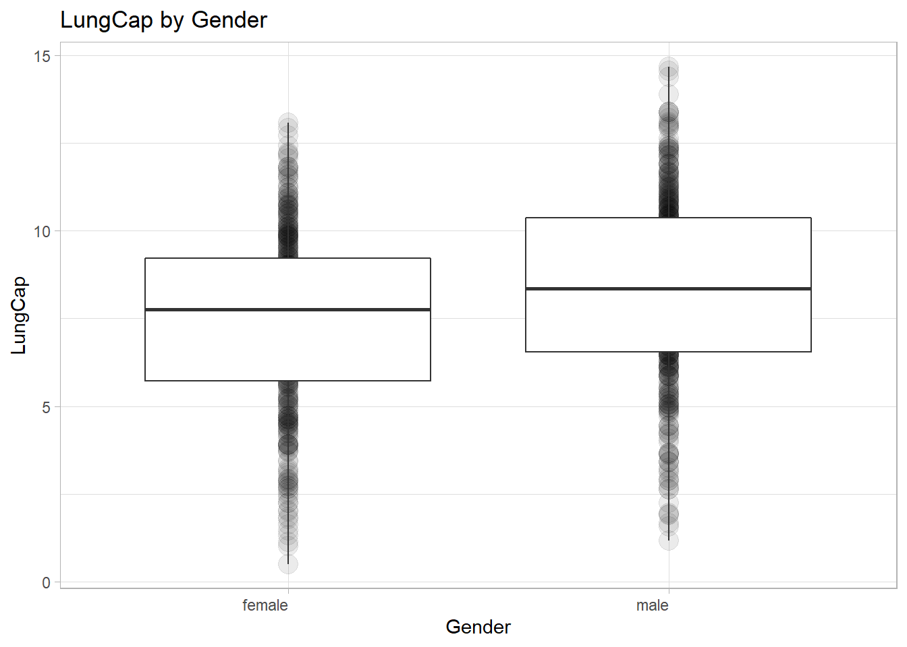

Code
library(readxl)Warning: package 'readxl' was built under R version 4.2.2Code
LungCapData <- read_excel("_data/LungCapData.xls")Caitlin Rowley
February 26, 2023
First, let’s read in the data from the Excel file:
Warning: package 'readxl' was built under R version 4.2.2The distribution of LungCap looks as follows:
The histogram suggests that the distribution is close to a normal distribution. Most of the observations are close to the mean. Very few observations are close to the margins (0 and 15).
Attaching package: 'dplyr'The following objects are masked from 'package:stats':
filter, lagThe following objects are masked from 'package:base':
intersect, setdiff, setequal, unionWarning: package 'ggtext' was built under R version 4.2.2# generate boxplot:
LungCap_Gender <- LungCapData%>%
group_by(LungCapData$Gender)%>%
ggplot(aes(x=Gender, y=LungCap)) +
geom_point(alpha=.08, size=5) +
labs(x="Gender", y="LungCap", title="LungCap by Gender") +
theme_light() +
geom_boxplot() +
theme(axis.text.x=element_markdown(hjust=1))
LungCap_Gender
The distribution of LungCap is higher for males than it is for females. For males, the Q1 value is approximately 6.5, the median value is approximately 8, and the Q3 value is approximately 10. For females, the Q1 value is approximately 5.5, the median value is approximately 7.5, and the Q3 value is approximately 9.
# A tibble: 1 × 1
`mean(LungCap, na.rm = TRUE)`
<dbl>
1 8.65# A tibble: 1 × 1
`mean(LungCap, na.rm = TRUE)`
<dbl>
1 7.77The mean LungCap for smokers is 8.645, while the mean LungCap for non-smokers is 7.77. This doesn’t seem to make sense!
# A tibble: 1 × 1
`mean(LungCap, na.rm = TRUE)`
<dbl>
1 7.20Warning in Age == 14:15: longer object length is not a multiple of shorter
object length# A tibble: 1 × 1
`mean(LungCap, na.rm = TRUE)`
<dbl>
1 8.91Warning in Age == 16:17: longer object length is not a multiple of shorter
object length# A tibble: 1 × 1
`mean(LungCap, na.rm = TRUE)`
<dbl>
1 9.60# A tibble: 1 × 1
`mean(LungCap, na.rm = TRUE)`
<dbl>
1 10.5The mean LungCap value for smokers 13 years or younger is 7.202, whereas it is 8.909 for those ages 14-15. For smokers 16-17, the mean LungCap value is 9.602, and for those 18 years and older, it is 10.513.
# A tibble: 1 × 1
`mean(LungCap, na.rm = TRUE)`
<dbl>
1 6.36# A tibble: 1 × 1
`mean(LungCap, na.rm = TRUE)`
<dbl>
1 8.84# A tibble: 1 × 1
`mean(LungCap, na.rm = TRUE)`
<dbl>
1 10.4# A tibble: 1 × 1
`mean(LungCap, na.rm = TRUE)`
<dbl>
1 11.1The corresponding LungCap mean values for non-smokers are 6.359, 8.844, 10.394, and 11.069. All LungCaps are higher for non-smokers with the exception of those in the 13-and-under age bracket. It would make sense that non-smokers would have higher lung capacities, though it is interesting that the value is lower for the youngest age group. This does, however, correlate with the results to question 1c, which indicated that smokers have higher lung capacities than non-smokers; there could, perhaps, be other extenuating circumstances contributing to these lower rates of capacity, such as health issues, development, or exposure.
[1] 162[1] 161.0838 sum(inmate)
1 0.1975309Here, we can see that the probability of an inmate having exactly two prior convictions is 19.8%.
sum(inmate)
1 0.6938272Here, we can see that the probability of a randomly selected inmate having fewer than two prior convictions is 69.4%.
sum(inmate)
1 0.891358Here, we can see that the probability of a randomly selected inmate having two or fewer prior convictions is 89.1%.
sum(inmate)
1 0.3061728Here, we can see that the probability of a randomly selected inmate having more than two prior convictions is 30.6%.
[1] 1.28642The expected value1 for the number of prior convictions is 1.3.
The variance for the prior convictions is 25948, while the standard deviation is 161.
---
title: "Homework 1"
author: "Caitlin Rowley"
description: "Template of course blog qmd file"
date: "02/26/2023"
format:
html:
toc: true
code-fold: true
code-copy: true
code-tools: true
categories:
- hw1
- desriptive statistics
- probability
---
### Question 1a: What does the distribution of LungCap look like?
First, let's read in the data from the Excel file:
```{r, echo=T}
library(readxl)
LungCapData <- read_excel("_data/LungCapData.xls")
```
The distribution of LungCap looks as follows:
```{r, echo=T}
hist(LungCapData$LungCap)
```
The histogram suggests that the distribution is close to a normal distribution. Most of the observations are close to the mean. Very few observations are close to the margins (0 and 15).
### Question 1b: Compare the probability distribution of the LungCap with respect to Males and Females. (Hint:make boxplots separated by gender using the boxplot() function)
```{r}
library(dplyr)
library(magrittr)
library(ggplot2)
library(markdown)
library(ggtext)
# generate boxplot:
LungCap_Gender <- LungCapData%>%
group_by(LungCapData$Gender)%>%
ggplot(aes(x=Gender, y=LungCap)) +
geom_point(alpha=.08, size=5) +
labs(x="Gender", y="LungCap", title="LungCap by Gender") +
theme_light() +
geom_boxplot() +
theme(axis.text.x=element_markdown(hjust=1))
LungCap_Gender
# would next like to identify specific values for boxplots...
```
The distribution of LungCap is higher for males than it is for females. For males, the Q1 value is approximately 6.5, the median value is approximately 8, and the Q3 value is approximately 10. For females, the Q1 value is approximately 5.5, the median value is approximately 7.5, and the Q3 value is approximately 9.
### Question 1c: Compare the mean lung capacities for smokers and non-smokers. Does it make sense?
```{r}
Smoker_Mean <- LungCapData %>%
filter(Smoke=="yes")%>%
select(Smoke, LungCap)%>%
summarize(mean(LungCap, na.rm = TRUE))
Smoker_Mean
NonSmoker_Mean <- LungCapData %>%
filter(Smoke=="no")%>%
select(Smoke, LungCap)%>%
summarize(mean(LungCap, na.rm = TRUE))
NonSmoker_Mean
```
The mean LungCap for smokers is 8.645, while the mean LungCap for non-smokers is 7.77. This doesn't seem to make sense!
### Question 1d: Examine the relationship between Smoking and Lung Capacity within age groups: "less than or equal to 13", "14 to 15", "16 to 17", and "greater than or equal to 18".
```{r}
Smoker_Age_1 <- LungCapData %>%
filter(Smoke=="yes")%>%
filter(Age<=13)%>%
select(Smoke, Age, LungCap)%>%
summarize(mean(LungCap, na.rm = TRUE))
Smoker_Age_1
Smoker_Age_2 <- LungCapData %>%
filter(Smoke=="yes")%>%
filter(Age==14:15)%>%
select(Smoke, Age, LungCap)%>%
summarize(mean(LungCap, na.rm = TRUE))
Smoker_Age_2
Smoker_Age_3 <- LungCapData %>%
filter(Smoke=="yes")%>%
filter(Age==16:17)%>%
select(Smoke, Age, LungCap)%>%
summarize(mean(LungCap, na.rm = TRUE))
Smoker_Age_3
Smoker_Age_4 <- LungCapData %>%
filter(Smoke=="yes")%>%
filter(Age>=18)%>%
select(Smoke, Age, LungCap)%>%
summarize(mean(LungCap, na.rm = TRUE))
Smoker_Age_4
```
The mean LungCap value for smokers 13 years or younger is 7.202, whereas it is 8.909 for those ages 14-15. For smokers 16-17, the mean LungCap value is 9.602, and for those 18 years and older, it is 10.513.
### Question 1e: Compare the lung capacities for smokers and non-smokers within each age group. Is your answer different from the one in part c? What could possibly be going on here?
```{r}
NonSmoker_Age_1 <- LungCapData %>%
filter(Smoke=="no")%>%
filter(Age<=13)%>%
select(Smoke, Age, LungCap)%>%
summarize(mean(LungCap, na.rm = TRUE))
NonSmoker_Age_1
NonSmoker_Age_2 <- LungCapData %>%
filter(Smoke=="no")%>%
filter(Age==14:15)%>%
select(Smoke, Age, LungCap)%>%
summarize(mean(LungCap, na.rm = TRUE))
NonSmoker_Age_2
NonSmoker_Age_3 <- LungCapData %>%
filter(Smoke=="no")%>%
filter(Age==16:17)%>%
select(Smoke, Age, LungCap)%>%
summarize(mean(LungCap, na.rm = TRUE))
NonSmoker_Age_3
NonSmoker_Age_4 <- LungCapData %>%
filter(Smoke=="no")%>%
filter(Age>=18)%>%
select(Smoke, Age, LungCap)%>%
summarize(mean(LungCap, na.rm = TRUE))
NonSmoker_Age_4
```
The corresponding LungCap mean values for non-smokers are 6.359, 8.844, 10.394, and 11.069. All LungCaps are higher for non-smokers with the exception of those in the 13-and-under age bracket. It would make sense that non-smokers would have higher lung capacities, though it is interesting that the value is lower for the youngest age group. This does, however, correlate with the results to question 1c, which indicated that smokers have higher lung capacities than non-smokers; there could, perhaps, be other extenuating circumstances contributing to these lower rates of capacity, such as health issues, development, or exposure.
### Question 2a: What is the probability that a randomly selected inmate has exactly 2 prior convictions?
```{r}
inmate <- c(128, 434, 160, 64, 24)
mean(inmate)
sd(inmate)
# mean=162
# sd=161.1
convictions <- c(0:4)
data <- tibble(inmate, convictions)
two <- 160/summarise(data, sum(inmate))
two
```
Here, we can see that the probability of an inmate having exactly two prior convictions is 19.8%.
### Question 2b: What is the probability that a randomly selected inmate has fewer than 2 prior convictions?
```{r}
fewer_than_two <- 128 + 434
fewer_than_two/summarise(data, sum(inmate))
```
Here, we can see that the probability of a randomly selected inmate having fewer than two prior convictions is 69.4%.
### Question 2c: What is the probability that a randomly selected inmate has 2 or fewer prior convictions?
```{r}
two_or_fewer <- 128 + 434 + 160
two_or_fewer/summarise(data, sum(inmate))
```
Here, we can see that the probability of a randomly selected inmate having two or fewer prior convictions is 89.1%.
### Question 2d: What is the probability that a randomly selected inmate has more than 2 prior convictions?
```{r}
more_than_two <- 160 + 64 + 24
more_than_two/summarise(data, sum(inmate))
```
Here, we can see that the probability of a randomly selected inmate having more than two prior convictions is 30.6%.
### Question 2e: What is the expected value1 for the number of prior convictions?
```{r}
data_prob <- transform(data, probability = (inmate/810))
data_ev <- transform(data_prob, x = convictions*probability)
EV <- sum(data_ev$x)
EV
```
The expected value1 for the number of prior convictions is 1.3.
### Question 2f: Calculate the variance and the standard deviation for the Prior Convictions.
```{r}
inmate <- c(128, 434, 160, 64, 24)
var(inmate)
sd(inmate)
```
The variance for the prior convictions is 25948, while the standard deviation is 161.